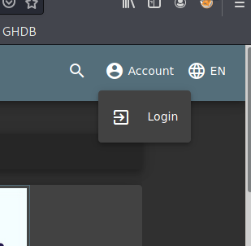

on juice shop we arent logged in we atre unauthenticated na

turn off intercept now
so in this case we try logging in by credential stuffing or navigate on page to find something of ur use
or try forget password too
2nd way is user authentcated
we ll have some more options
3rd is Admin authenticated
here u hhave full access na
u should try to bypass restricetion like getting admin from unauthenticated


right click and add to scope

after clicking yess on top click Filter: Hdinig ....
and select Show only in scope items
in burp premium
u can have an option called scan
which odes spidering which looks fr the other sites as well

thiss on dashboard which tells potential issues that could be exploited
dont rely on burp pro or nessus for scanning resutls alsodo it manually
once u ave the reqwuest in intruder send it to the repeater and mess around with it there

herere this turbo intruder helps to do payload wala scene very faster than normal one
imp ones in burpsuite are proxy intercept and target wala tab and repeater tab mostly